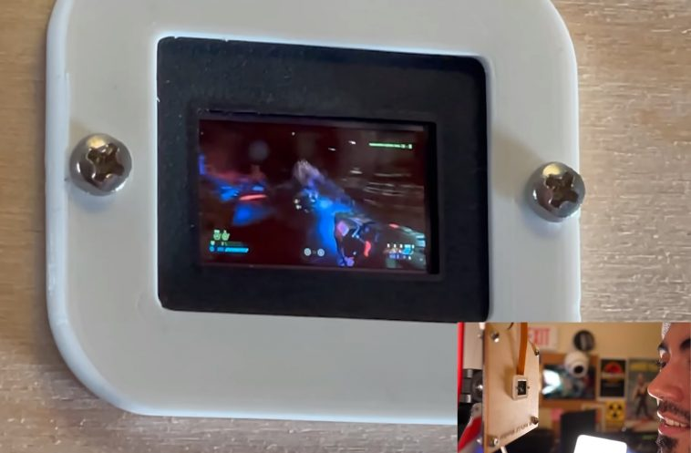

Nada detiene al Doomslayer… ni siquiera el tamaño
Un Nintendo Game & Watch, un test de embarazo, cajeros automáticos y hasta impresoras. Cualquier cosa es buena para jugar al Doom si eres lo suficientemente valiente, pero en algunos casos no es cuestión de modificar el código del juego, sino de utilizar hardware extraño… muy extraño. Eso nos lleva al canal de YouTube de Mr. Volt, quien pagó una verdadera fortuna por lo que tal vez sea el monitor de alta definición más pequeño del mundo, con tecnología AMOLED, 0.7 pulgadas, resolución 1080p y entrada HDMI. ¿Qué hizo Mr. Volt? Obviamente, jugar Doom Eternal en él…
Si tiene una pantalla y un poco de memoria, lo más probable es que alguien trate de ejecutar Doom allí. La Web está repleta de ejemplos fabulosos que van desde teléfonos de línea hasta termostatos, pasando por calculadoras, osciloscopios, y básicamente cualquier cosa con una pieza de silicio más o menos compatible.
Sin embargo, hoy nos cruzamos con otro desafío para la franquicia Doom, y es desplegar toda su furia en el monitor más pequeño del mundo. Mr. Volt en YouTube admite que tiene un pequeño problema con pantallas y monitores, y ese problema lo llevó a las misteriosas aguas de Aliexpress, donde encontró un «módulo de micropantalla AMOLED» con apenas 0.7 pulgadas…
Sin embargo, hoy nos cruzamos con otro desafío para la franquicia Doom, y es desplegar toda su furia en el monitor más pequeño del mundo. Mr. Volt en YouTube admite que tiene un pequeño problema con pantallas y monitores, y ese problema lo llevó a las misteriosas aguas de Aliexpress, donde encontró un «módulo de micropantalla AMOLED» con apenas 0.7 pulgadas …
El vendedor explica que su módulo está preparado para «aplicaciones militares, industriales y médicas», sistemas HMD, y el ocasional viewfinder de alta definición en cámaras de vídeo. Ahora, lo de alta definición no es una exageración: Este monitor posee una resolución nativa de 1920 x 1080 píxeles, o sea, más de 6.2 millones de subpíxeles… ¡en 0.7 pulgadas!

Mr. Volt pagó el escandaloso precio de 275 dólares para utilizar el monitor en un proyecto que terminó cancelado, por lo que decidió crear un pequeño soporte, conectarlo a Windows, y jugar una partida de Doom Eternal. Esto fue posible gracias al puerto micro HDMI en la controladora del monitor, y al usar USB como alimentación, tampoco tuvo problemas con la energía. El único bug mayor fue un inconveniente con el modo landscape… y Mr. Volt lo solucionó dando vuelta la pantalla.
Monitor AMOLED, 1080p, 60 Hz, 0.7 pulgadas, Doom Eternal. Es caro, es ridículo, es absurdo, y nos encanta.